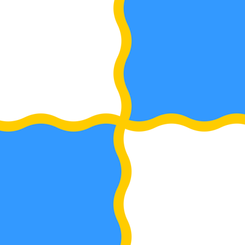
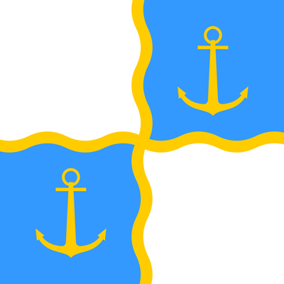
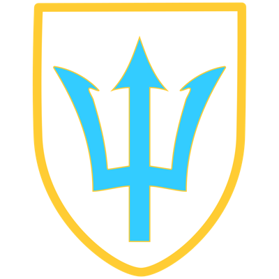

Fictional Insignia
Copy the decal's URL, select a decal in Sprocket Tank Design, and paste the link into the URL field.
- 
atlanticas1
https://sprockettools.github.io/img/atlanticas1.png
Uploaded by: blobonu
Tags: fictional, millitary vehicle identification, symbol
-
atlanticas10
https://sprockettools.github.io/img/atlanticas10.png
Uploaded by: blobonu
Tags: fictional, millitary vehicle identification, symbol
-
atlanticas11
https://sprockettools.github.io/img/atlanticas11.png
Uploaded by: blobonu
Tags: fantasy, military vehicle identification, symbol
-
atlanticas12
https://sprockettools.github.io/img/atlanticas12.png
Uploaded by: blobonu
Tags: fantasy, military vehicle identification, symbol
-
atlanticas13
https://sprockettools.github.io/img/atlanticas13.png
Uploaded by: blobonu
Tags: fantasy, military vehicle identification, symbol
-
atlanticas14
https://sprockettools.github.io/img/atlanticas14.png
Uploaded by: blobonu
Tags: fantasy, military vehicle identification, symbol
- 
atlanticas2
https://sprockettools.github.io/img/atlanticas2.png
Uploaded by: blobonu
Tags: fictional, millitary vehicle identification, symbol
-
atlanticas3
https://sprockettools.github.io/img/atlanticas3.png
Uploaded by: blobonu
Tags: fictional, millitary vehicle identification, symbol
-
atlanticas4
https://sprockettools.github.io/img/atlanticas4.png
Uploaded by: blobonu
Tags: fictional, millitary vehicle identification, symbol
-
atlanticas5
https://sprockettools.github.io/img/atlanticas5.png
Uploaded by: blobonu
Tags: fictional, millitary vehicle identification, symbol
-
atlanticas6
https://sprockettools.github.io/img/atlanticas6.png
Uploaded by: blobonu
Tags: fictional, millitary vehicle identification, symbol
- 
atlanticas7
https://sprockettools.github.io/img/atlanticas7.png
Uploaded by: blobonu
Tags: fictional, millitary vehicle identification, symbol
-
atlanticas8
https://sprockettools.github.io/img/atlanticas8.png
Uploaded by: blobonu
Tags: fictional, millitary vehicle identification, symbol
-
atlanticas9
https://sprockettools.github.io/img/atlanticas9.png
Uploaded by: blobonu
Tags: fictional, millitary vehicle identification, symbol
-
guprabbitteam
https://sprockettools.github.io/img/guprabbitteam.png
Uploaded by: nathanthedummy
Tags: girls und panzer, anime, oorai

gupsharkteam
https://sprockettools.github.io/img/gupsharkteam.png
Uploaded by: nathanthedummy
Tags: gup, anime, oorai

hts_symbol_skyde
https://sprockettools.github.io/img/hts_symbol_skyde.png
Uploaded by: jagd___
Tags: symbol, heavy, batallion, weathered
-
krasnovarian revolutionary army
https://sprockettools.github.io/img/krasnovarian_revolutionary_army_.png
Uploaded by: nathanthedummy
Tags: fictional, soviet
-
kuromoriminehighschool
https://sprockettools.github.io/img/kuromoriminehighschool.png
Uploaded by: nathanthedummy
Tags: gup, girls und panzer, anime

ooaraihighschool
https://sprockettools.github.io/img/ooaraihighschool.png
Uploaded by: nathanthedummy
Tags: gup, girls und panzer, anime
.png)
stav logo (retr0_spektro1d)
https://sprockettools.github.io/img/stav_logo_(retr0_spektro1d).png
Uploaded by: retr0_spektro1d
Tags: fictional, scifi, vehicles, megacorporation